한도훈24세 · 대학생 · genie 3년차
“나만의 플레이리스트 모으기가 취미인 나, 곡 탐색이 불편해요”
- 행동
- 확고한 취향의 곡을 모아 500곡 넘는 플레이리스트를 직접 관리
- 니즈
- 음악 수집을 최소한의 절차로 효율적이게 하고 싶다
- 불편
- 곡 선별에 시간 낭비 · 추천곡을 듣다 보면 기존 곡으로 돌아갈 수 없음
Mobile App UX/UI · Case Study
스트리밍의 복잡함을 걷어내고, 몰입을 설계하다.
기존 지니뮤직 앱의 Pain point와 문제점 분석을 통해, 사용자 친화적 음악 서치 및 공유 프로세스를 제공하기 위하여 정량적·정성적 데이터를 기반으로 기획한 개인 프로젝트입니다.


복잡한 음악 서치·청취 과정을 개선해, 취향에 맞는 음악을 쉽고 빠르게 찾고 차별화 기능을 손쉽게 쓰는 친화적 스트리밍 서비스
2022년 한국인이 가장 많이 사용한 음악 스트리밍 앱 (순위)
유튜브 뮤직·멜론에 이어 국내 3위. 그러나 오른쪽 사용자 수 추이에서는 3년 연속 감소세.
출처: 지니뮤직 · 원본 차트에 수치가 표기되지 않아 순위만 표시
음악 스트리밍 앱 사용자 수 변화 (단위: 만 명)
출처: 데이터솜 · 증감은 원본 수치로 계산
음악 콘텐츠 서비스 이용 이유 · ‘익숙해서’ 응답 비교 (Unit: %)
지니뮤직 이용 이유 Top 2
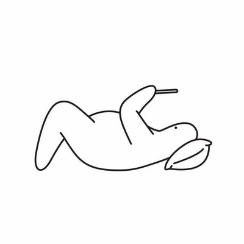
60.3%1위 · 익숙해서
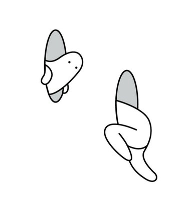
50.8%2위 · 할인/제휴
프로모션이 있어서
반면 지니뮤직에서 ‘디자인(UI)·사용성(UX)이 좋아서’, ‘내게 맞는 음악 추천을 잘 해줘서’는 하위 응답 — 사용성이 머무는 이유가 되지 못하고 있음 (원본 차트 막대 기준, 수치 미표기)
출처: 오픈서베이 · 원본에 수치가 표기된 항목만 표시
출처: DBDLAB, 「음악 앱 이용 UX 트렌드 리포트」(2022) · 연합뉴스 보도 재인용 · 원본 그래프의 위치를 가독성 있게 재작도
‘지니뮤직’ 사용자는 네 가지 앱 중
비교적 Utilitarian(유용함) 경험을 가장 높게 평가
Utilitarian · 실용적, 기능적 측면이 강조되어 유용한 경험
Hedonic · 쾌락적, 심미적 측면이 강조되어 즐거움을 느낌
Autonomy · 주도권이 시스템에 있어, 의사결정 자동화로 편리함
강점은 ‘기능’인데, 돌비 애트모스·굿나잇 뮤직 등 차별화 기능이 전체메뉴 속에 숨어 있음
→차별화 기능을 홈·내비게이션에 노출 P.06
사용자가 직접 찾아 듣는(Control) 경험인데, 연관추천까지의 경로가 길고 맥락이 끊김
→추천 진입 단축 · 미리듣기로 청취 맥락 유지 P.07–08
유용함은 결국 ‘내 리스트 관리’에서 체감되는데, 편집 UI의 상태 인식이 어려움
→편집 전용 모드와 명확한 선택 상태 P.09
“나만의 플레이리스트 모으기가 취미인 나, 곡 탐색이 불편해요”

“지니뮤직만의 특별한 기능들을 자주 사용해요”
“홈 화면, 검색 화면 모두에 키워드추천이 숨어있었어!”
“비슷한 느낌의 새로운 노래가 없을까?”
“MY 플레이리스트에 어떻게 담는거였는지 기억이 안 나네”
실용적이고 차별화된 유용한 서비스를 제공해, 사용자가 편리하게 개인화에 다다를 수 있는 경험을 설계합니다.
직관적인 프로세스로 나만의 곡 탐색 · 취향에 맞는 맞춤형 스트리밍 · 차별화 기능 접근성 향상
차별화 기능이 전체메뉴 속에 숨어 있고, ‘홈’ 탭 이름이 모호함
필요도가 낮은 이용권·프로필 아이콘이 GNB를 차지차별화 기능을 GNB·탭바에 배치
돌비 애트모스 / 굿나잇 뮤직 토글, ‘뮤직’ · ‘뮤직허그’ 탭추천 리스트까지 스와이프–오버스크롤–탭의 단계를 거침
‘유사곡 리스트’라는 목표 도달 지연상단 스와이프 한 번으로 추천 리스트 진입
중간 바텀시트·카테고리 탭 단계 제거추천곡을 재생하면 듣던 곡으로 돌아갈 수 없음
곡 정보 확인을 위해 페이지 이동이 반복됨독립된 미리듣기 레이아웃 추가
좌우 스와이프로 카테고리·다음 곡 탐색, 카드에서 공유·담기편집 시 정보 인식이 떨어져 편집이 어려움
담기·편집 과정을 인식하기 힘든 UI편집에만 집중하는 편집 모드
탭은 선택만, 드래그로 다수 곡 한 번에 편집메인화면
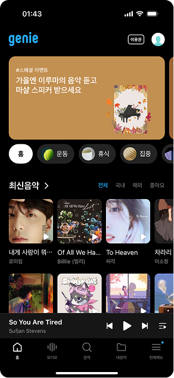
강점 없는 GNB이미 이용권을 구독 중인 다수 사용자에게 이용권 아이콘은 불필요한 UI
강점이 보이지 않는 탭바홈 · 오디오 · 검색 · 내음악 · 전체메뉴 — 차별화 ‘기능성’ 메뉴 부재
차별화 기능 노출 · ON / OFF 두 가지 상태
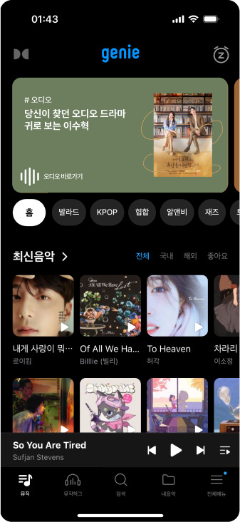
GNB 토글이용권·MY 삭제, 돌비 애트모스 / 굿나잇 뮤직 on/off
장르 칩콘셉추얼한 구분을 장르별로, 오디오를 메인 컬럼에
탭바‘홈’→‘뮤직’, 뮤직허그 탭 배치
청취화면
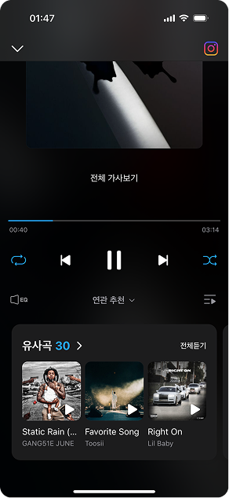
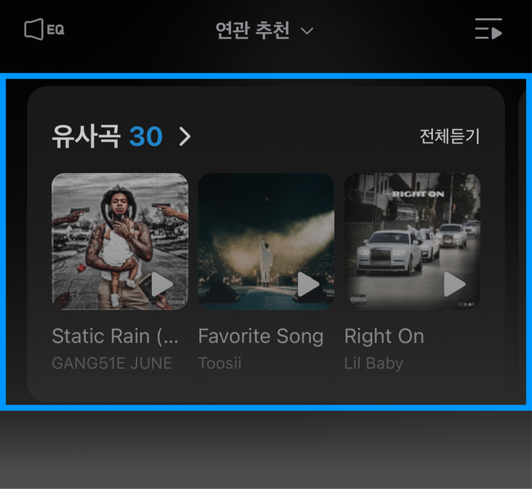
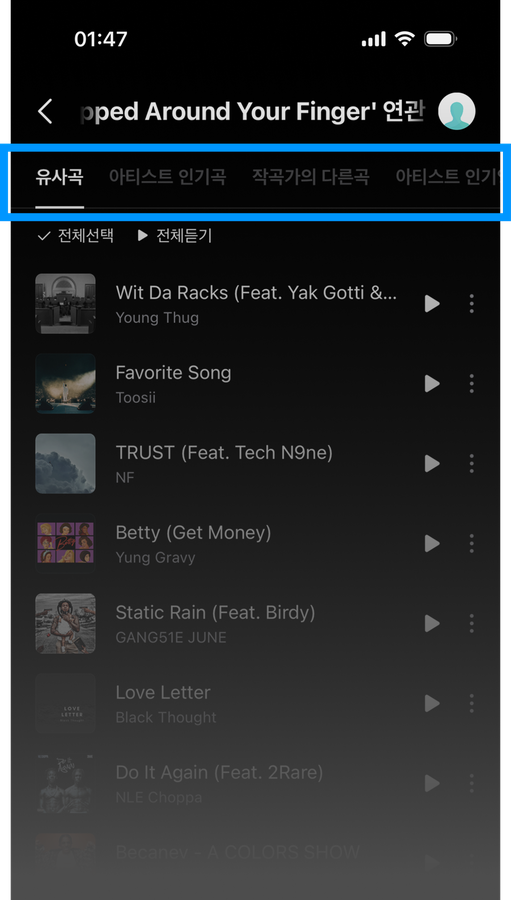
경로상단 스와이프 → 바텀시트 오버스크롤 → 탭 → 추천 리스트4단계
기본 상태 → 사용자 행동 → 결과
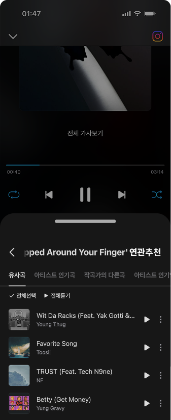
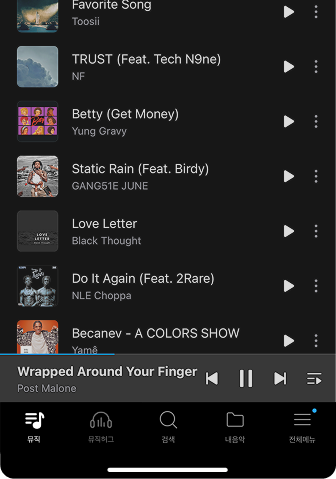
경로상단 스와이프 → 추천 리스트 확인2단계 (설계 경로 기준)
연관추천 리스트

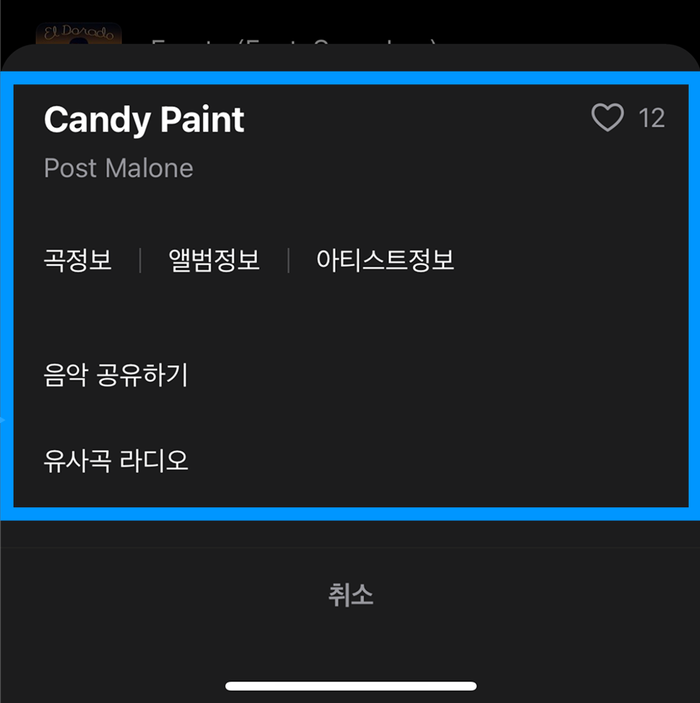
정보 확인 → 뒤로가기곡 정보는 별도 페이지, 확인 후 다시 리스트로
재생하면 재생목록으로 자동 이동듣던 곡으로 돌아갈 수 없음
경로유사곡 선택 → 곡 정보 페이지 → 뒤로가기 → 재생 → 재생목록 이동맥락 끊김
연관추천 미리듣기 레이아웃 추가
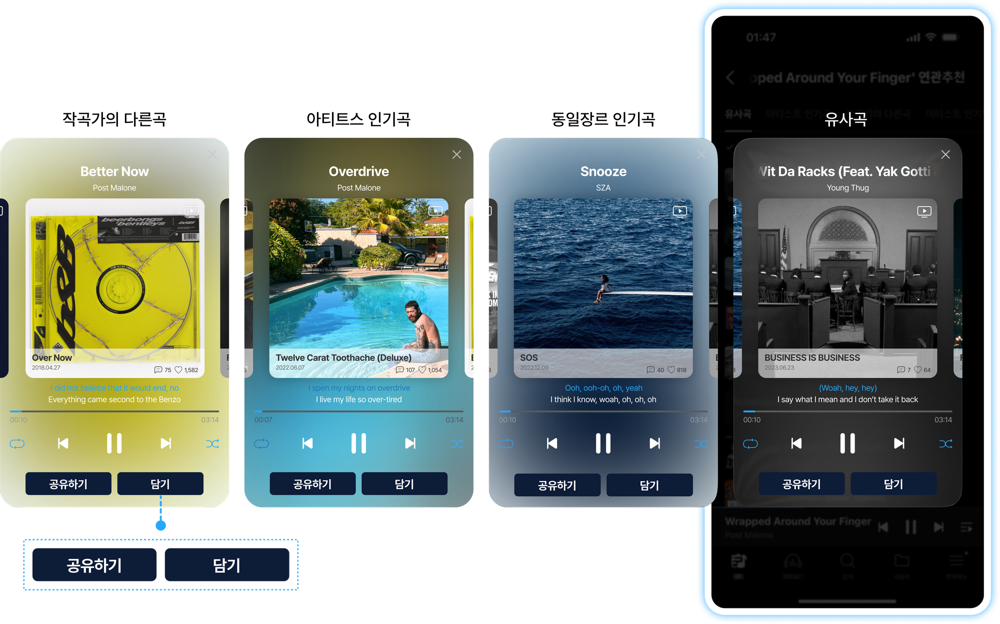
기본추천 리스트에서 곡 선택 → 행동미리듣기 카드 좌우 스와이프 → 결과카드에서 공유·담기듣던 곡 유지
재생목록 화면

‘재생 | 편집’ 구분이 약함작은 텍스트로만 모드를 표시
선택 상태 인식이 어려움얇은 원형 체크박스, 선택 행의 대비가 낮음
한 곡씩 이동행마다 드래그 핸들로 순서를 옮겨야 함
기본 상태 → 사용자 행동 → 결과
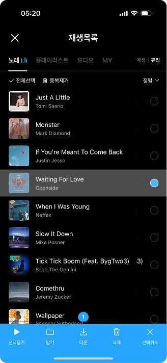
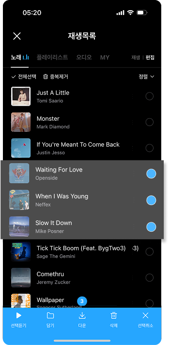
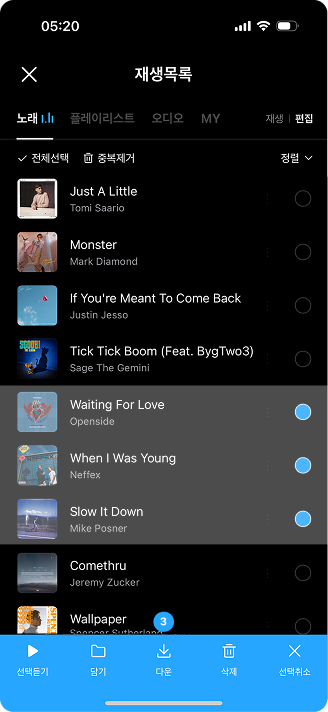
편집 모드탭하면 선택만, 재생에는 영향 없음 · 하단 액션바에 선택 개수 배지다중 곡 편집
왼쪽 돌비 애트모스 · 오른쪽 굿나잇 뮤직. 흰색(ON) / 회색(OFF) 명도 대비로 현재 상태를 표시
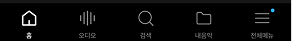
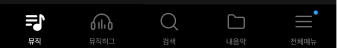
‘홈’ → ‘뮤직’으로 음악 탐색 메뉴임을 아이콘·명칭으로 전달하고, 소통 창구 뮤직허그를 탭바에 배치
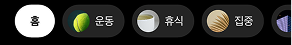
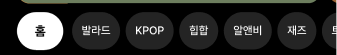
운동·휴식·집중 같은 콘셉추얼한 구분을 발라드·KPOP·힙합 등 장르별로 나눠 직관적인 가이드 제공
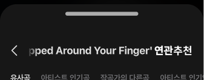
애니메이션 대신 기본 → 행동 → 결과 3컷으로 전환 과정을 표현
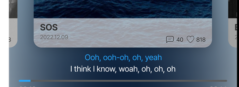
곡·발매일·댓글·좋아요 수를 이미지와 함께 표시하고, 공유하기 / 담기를 카드 하단 고정 버튼으로
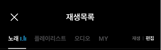
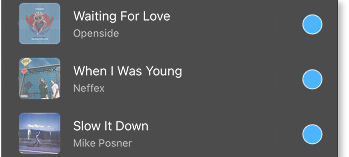
재생 | 편집 모드 표시 → 선택 행 하이라이트 → 선택 개수 배지 + 액션바(선택듣기·담기·다운·삭제)
탐색 접근성차별화 기능을 GNB·탭바로, 연관추천 진입을 상단 스와이프 한 번으로
P.06–07청취 맥락 유지독립된 미리듣기 카드로 듣던 곡을 유지한 채 추천곡 탐색
P.08재생목록 편집 흐름편집 전용 모드와 드래그 다중 선택으로 편집 과정 단순화
P.09조작 부담 최소화중간 단계를 줄이고, 하나의 제스처가 하나의 목적지로
기능 발견 가능성숨은 기능을 매번 보는 영역에 배치하고 이름으로 역할을 전달
명확한 상태 구분ON/OFF, 재생/편집, 선택/미선택을 색·명도·모드로 구분
탐색 시간단계 수 감소는 설계 경로 비교일 뿐, 실제 소요 시간은 측정하지 않음
미검증오류율제스처 진입·드래그 선택의 오조작 빈도는 확인되지 않음
미검증사용성 만족도실사용자 대상 만족도 평가를 진행하지 않음
미검증프로토타입 사용성 테스트AS-IS / TO-BE 프로토타입으로 동일 과제(추천 진입·미리듣기·편집) 수행 비교
가설 검증 지표과제 완료 시간 · 오류 횟수 · 사용성 만족도 설문으로 가설 검증
결과 기반 개선제스처 발견성이 낮으면 진입점 힌트 등 보조 UI를 반복 개선